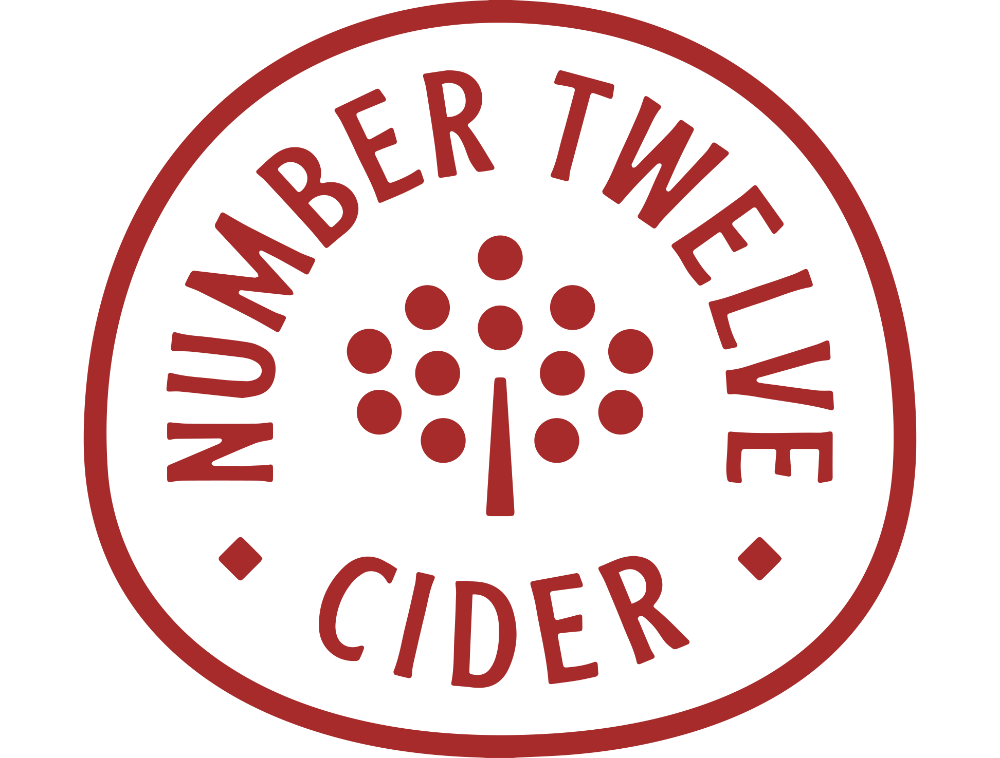
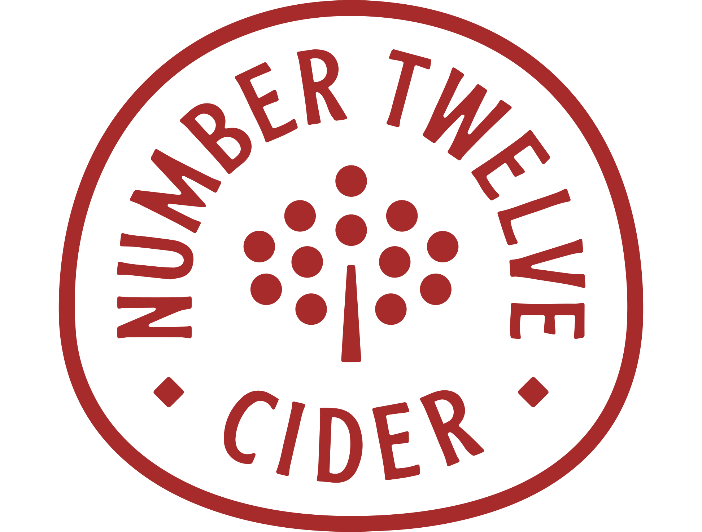

Otter Tail County
Uptappd:
(3.91)
41714 Foursquare Rd, Battle Lake, MN 56515
Mille Lacs County
(4.03)
6772 90th St, Milaca, MN 56353
Saint Louis County
(3.78)
2307 W Superior St, Duluth, MN 55806
Goodhue County
(3.74)
3572 Old Tyler Rd, Red Wing, MN 55066
Blue Earth County
(3.3)
20758 528th Ave #2, Lake Crystal, MN 56055
Winona County
(3.7)
32553 Forster Rd, La Crescent, MN 55947
Rice County
(3.73)
4609 135th St E, Dundas, MN 55019
Mower County
(3.64)
78757 Highway 16. Spring Valley, MN 55975
Stearns County
(3.75)
11738 Co Rd 51, St Joseph, MN 56374
Meeker County
(3.81)
32025 MN-15, Kimball, MN 55353
Hennepin County
701 SE 9th St, Minneapolis, MN 55414
Scott County
8251 Old Hwy 169 Blvd, Jordan, MN 55352
Le Sueur County
(3.46)
15953 MN-99, Montgomery, MN 56069
(3.65)
614 N 5th St, Minneapolis, MN 55401
Cook County
(3.79)
202 Ski Hill Rd, Lutsen, MN 55612
(3.6)
1500 Fillmore St NE, Minneapolis, MN 55413
26205 Fairlawn Ave, Webster, MN 55088
Washington County
(3.66)
6428 Manning Ave N, Stillwater, MN 55082
(3.63)
3016 E Lake St, Minneapolis, MN 55406
St. Louis County
2515 W Superior St, Duluth, MN 55806
Crow Wing County
(N/A)
17677 MN-371, Brainerd, MN 56401
Kanabec County
(3.55)
2752 215th Ave, Mora, MN 55051


 
